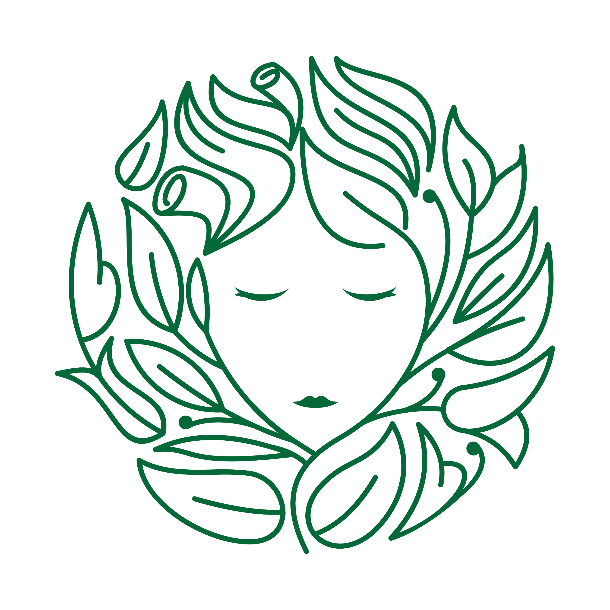

OUR WORLDS
HOME
MENU & PRICES
ALL SERVICES
GALLERY
BOOK
⇄ FOR HIM
Ecosophy
BEAUTY & SPA · FOR HER
EN
AR
{{ waLabel }}
OUR WORLDS
HOME
MENU & PRICES
ALL SERVICES
GALLERY
BOOK
⇄ FOR HIM
for her
THE FULL MENU
{{ introLine }}
SCROLL ↓

{{ f.label }}
{{ countLabel }}
{{ g.name }}
{{ g.blurb }}
{{ g.meta }}
{{ it.name }}
{{ it.price }}
{{ it.desc }}
{{ it.duration }}
NOT SURE WHERE TO START?
Message us and we will build a visit around the time you have — an hour, an afternoon, or a full day.
WHATSAPP US
Ecosophy
Beauty centre and spa for women. Al Rawda 2, Ajman, UAE.
CONTACT
@ecosophy.ae
{{ whatsapp }}
HOURS
Daily · 11:00 AM – 12:00 Midnight
MORE
For Her
Ecosophy Gent Spa